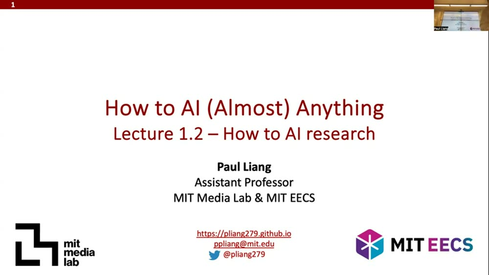
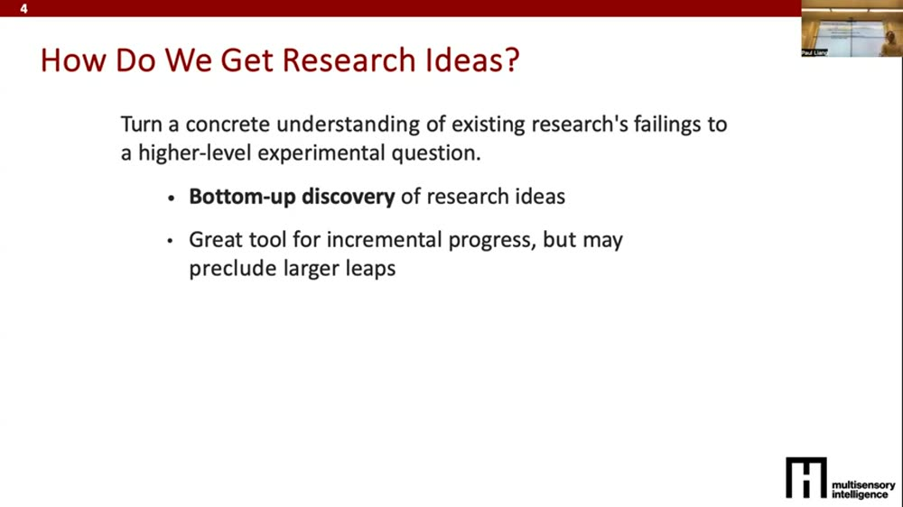
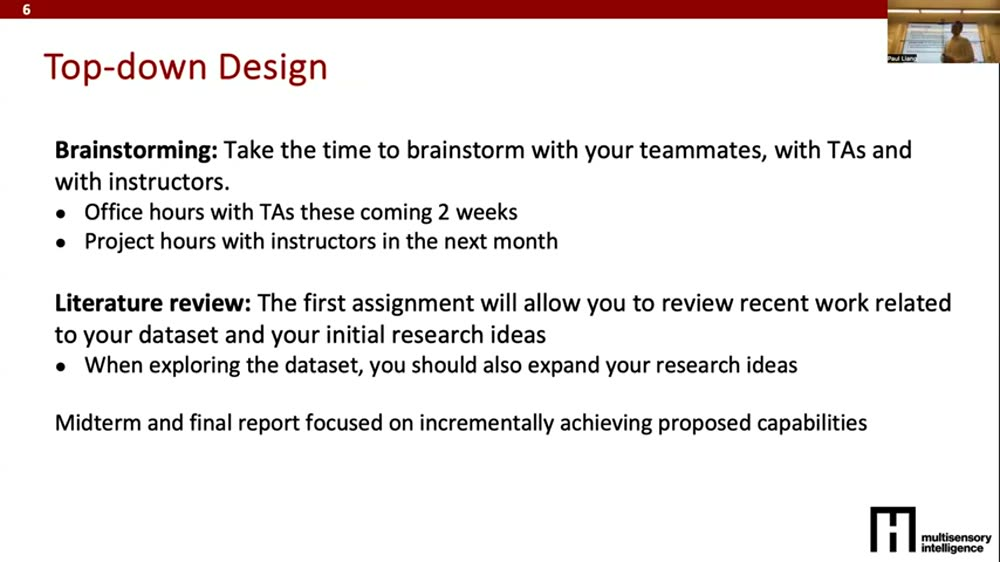
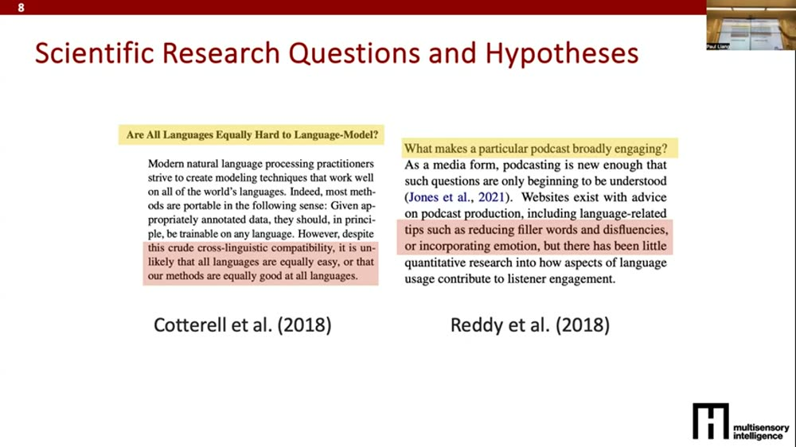
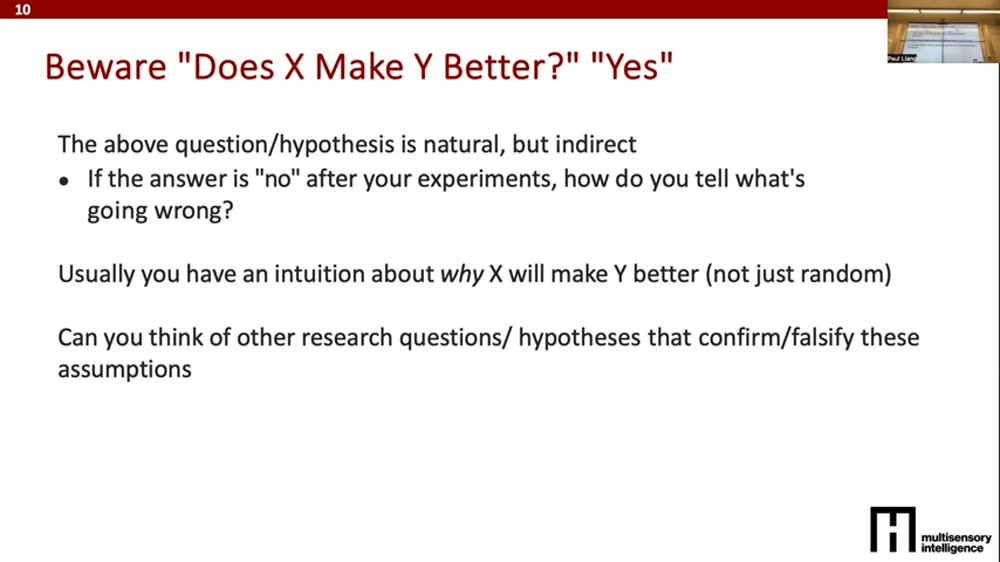
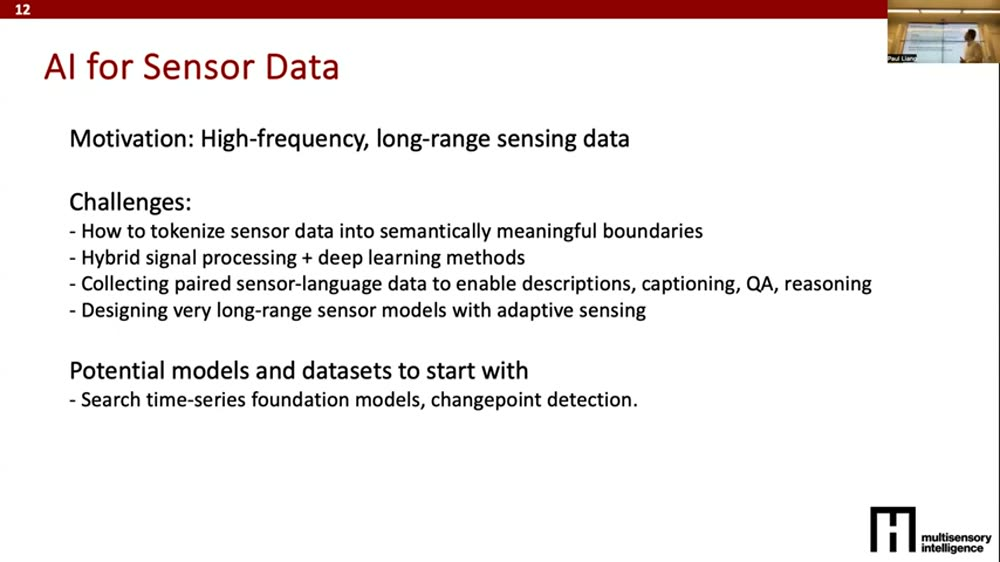
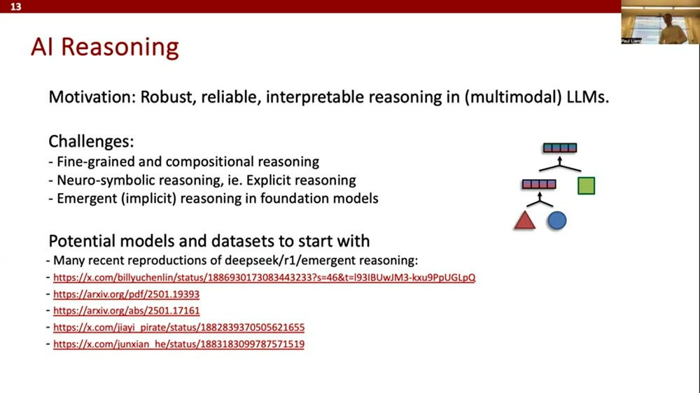
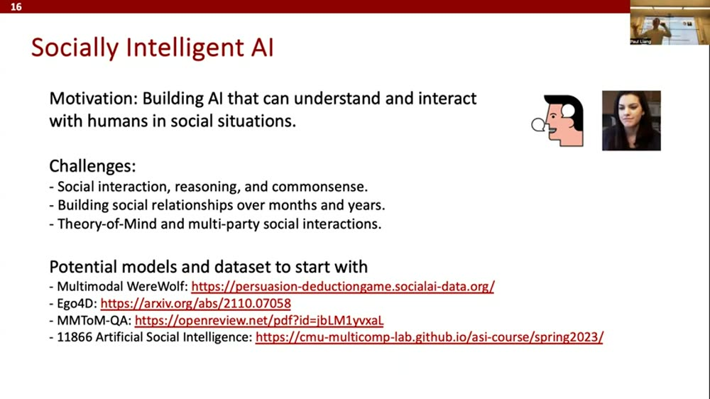
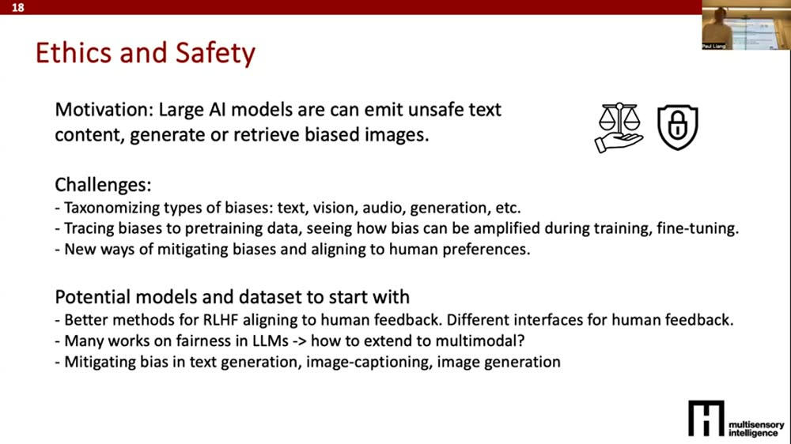

《How to AI Almost Anything》Lecture 1.2：AI 研究入门
⚡一分钟速览▼
这集讲啥：这是 MIT《How to AI Almost Anything》（2025 春季）的一节"方法论课"，由 Paul Liang 主讲。它不教某个具体模型，而是手把手教你怎么做一项 AI 研究：从哪儿找点子、怎么把模糊的好奇心提炼成能验证的研究问题、怎么快速调研文献、最后怎么写报告。
为什么重要：这门课要求每个人在一学期内做出一个研究项目。很多人卡的不是"不会写代码"，而是"不知道做什么、怎么判断自己的想法有没有价值、怎么不重复造别人造过的轮子"。这节课就是把这套"老手脑子里默认的研究流程"显式讲出来，让新手也能照着走。
这节课的骨架：
一句话主线：研究 = 观察 → 查文献定位 → 提一个可证伪的问题/假设 → 做实验 → 分析 → 回头再循环。新手先走"自下而上"最稳：跑现成最强方法、做错误分析、把失败模式归类、再去修。整节课就是把这条循环每一环讲透 + 给一堆现成的研究方向当弹药。
01这节课讲什么 + 研究就是一个迭代循环▼
01:30本节课的提纲
开场先是签到（决定每个人是修学分、还是旁听、参与到哪一档）。然后 Paul Liang 进入正题：这是 Lecture 1.2，主题"如何做 AI 研究"。这是个例外——平时周四不上正式 lecture，而是更偏动手的 tutorial / 讨论；但今天他想专门讲清楚做 AI 研究的基本功。本节覆盖四块：
- 怎么生成研究想法（好几种产 idea 的路子）；
- 怎么做文献调研、怎么深读一篇论文（还会现场 demo 他平时怎么找好论文）；
- 怎么高效执行研究想法，让进展快；
- 怎么写论文 / 写报告（课程要求的一部分），并现场拆解他组里最近写的几篇论文。
02:29所有研究都遵循同一个迭代循环
他先给出一张大图：几乎所有做研究的人都在走同一个迭代闭环——
- 初始观察 & 想法：你有一个真想验证的念头；
- 文献回顾：看这个想法是不是早被人做过、它和已有工作什么关系；
- 研究问题 / 假设：基于你的想法和文献，提出"这个想法行不行、为什么行"；
- 实验：在 AI 语境下通常就是写代码、跑实验、看模型表现；
- 分析结果、汇报结论；
- 结论不满意？带着新观察、新定位、新问题、新实现，回到第 1 步再转一圈。
注意"循环"这个词：研究不是一条直线，第一轮结论往往不够好，价值就在于你把它当反馈、转下一圈。这节课接下来就是把这个圈的每一环（产 idea、查文献、提问题、快速实验、写报告）逐一拆开。

英文逐字稿（01:30–03:40）
02怎么产生 idea：自下而上 vs 自上而下▼
03:40第一条路：自下而上发现（bottom-up）
怎么得到研究想法？他认为大体两条路。第一条是自下而上的发现：你去调研某个领域现在在做什么、把当前最强的模型（SOTA）拿来亲手跑一遍，看它哪里行、哪里不行，然后用"它失灵的地方"来启发你下一步该做什么。一句话概括 PPT 上那句话：把"对现有研究失败之处的具体理解"翻译成"一个更高层的实验问题"。
- 优点：适合渐进式、稳步推进，比较安全——你的起点是个"在某些场景能 work、在另一些场景挂掉"的东西，只要你能把它挂掉的场景修好，就拿到了一个更好的新方法。
- 缺点：很难做出大跳跃，因为你始终被"现有方法"锚住了。
04:34第二条路：自上而下（top-down）
它和自下而上正相反：不从"什么 work、什么不 work"的细节出发，而是从更大的研究主题/愿景出发——那种你一说出来，别人立刻反应"这从没人做过、要是真能做出来太牛了"的大主题。当然这种大目标一上来不可行，你得把它拆成几个月、几年内能够到的小块。这种是更大的 idea、更像顶会论文级别的题目，但通常风险更高。
记住这对核心权衡：自下而上 = 起点是"能跑的东西" → 安全、增量、不易做大；自上而下 = 起点是"诱人的大愿景" → 高风险、可能跨越式。两者不是对错，是不同的赌注。

英文逐字稿（03:40–05:19）
03课程怎么安排：提案 → 期中 → 期末三份报告▼
05:19课程默认让所有人走自下而上
为了"安全"，课程设计成保证人人至少能做自下而上的研究，做出可跑的东西；当然你也可以另立一个更"自上而下"的北极星去冲。自下而上分几个阶段：
- 提案报告（约 2–3 周后）：圈定你感兴趣的研究领域；圈出该领域的 SOTA 现有方法——如果该领域没有现成方法，就把别的领域的 SOTA 移植（port）过来。
- 期中报告（春假后交）：你应当已经把这些现有方法跑过一遍、分析它在哪 work 在哪不 work，做错误分析（error analysis），把所有失败模式归类（taxonomize），并据此指出"可以怎么修这些错误"。
- 期末报告（下半学期）：把你提案里的新想法实现出来，并总结它到底有没有修好你在期中发现的问题。
给做"套壳"项目的人一句扎心提醒：如果你只是套 LLM / ChatGPT——调 API、拿自己的数据做微调——那你只走到了"期中报告"这一步（= 体验了某个 SOTA 方法而已）。你还得分析它的成功与失败、提出"接下来怎么提升性能"的假设，才算真正在做研究。
07:24想做 moonshot 也欢迎，但要来 office hours
如果你不想只是试各种 SOTA、而是有更"登月级"的想法，他也乐意支持，但务必来 office hours 和他、和 TA 头脑风暴（每周二、周四课后），一起把它收敛成"一学期内可做"的东西。即使是 moonshot，文献调研依然很重要——你得用现有数据集 / 现有方法把它定位好。对这条路，期中/期末报告结构更松：不强制"先复现现有→错误分析→提新方法"，而是朝你那个高层想法增量推进。

英文逐字稿（05:19–08:32）
04研究问题 vs 假设：怎么把好奇心提成"能验证的问题"▼
08:46什么是研究问题（research question）
所有想法背后通常都有一个研究问题。研究问题 = 你对"整个学术社区还不知道的东西"提出的明确问题。它极其关键，因为它定义了你的研究"新"在哪、不新在哪。
人们常抱怨审稿人"不公平地说论文不新颖"——其实多半是两种情况之一：① 这个研究问题社区早已回答过了；② 你没把这个研究问题答透。所以研究问题就是"新颖性"的边界线。
他给一个实用经验：研究问题最好写成 yes/no（是/否）形式，而不是 how（怎么……）形式。
09:41什么是假设（hypothesis）+ 为什么 yes/no 好
假设 = 你对"这个研究问题答案应该是什么"的先验猜测（a priori guess）。为什么研究问题写成 yes/no 特别有用？因为这样你能很容易地去检验（verify）、证实或证伪（falsify）它——你只要找到一个观察，要么支持要么推翻它，你就对这个问题有了一个扎实的答案。
把这两个词分清：研究问题是"社区还不知道答案的明确提问"；假设是"你赌它答案是啥 + 为什么"。一个好研究 = 一个新颖且可证伪的问题 + 一个带理由的假设 + 能确认/推翻它的实验。
05两个好问题范例：语言建模 & 播客吸引力▼
10:05范例一：所有语言都一样难建模吗？（yes/no 型）
Cotterell 等 2018 的论文问："Are all languages equally hard to language-model?"（所有语言对语言模型来说都一样难吗？） 为什么这是个好问题？
- 够开放、够新：2018 年之前没人有答案；
- 是清楚的 yes/no：要么"是，都一样难"→那也许能训一个统一模型覆盖所有语言；要么"否，不一样难"→那就该给每种语言上专门模型。不管答案哪边，都直接导出后续行动。
论文里红色高亮的那句就是假设："基于跨语言兼容性（cross-linguistic compatibility），不太可能所有语言都同样容易、或我们的方法对所有语言都同样好。" 这条假设好在：既猜了答案（否），又给了一个具体理由（跨语言兼容性这个概念，作者会在论文里定义）。由此能直接推出实验设计——定义什么叫"兼容"、找一批兼容/不兼容的语言、做对照实验看是否一样难建模。
11:46范例二：什么让播客普遍吸引人？（how 型 → 拆成 yes/no）
第二个来自社科视角（Reddy 等 2018）："What makes a particular podcast broadly engaging?" 这是个更复杂的问题，因为它不是 yes/no。要回答它，你得先有假设猜哪些具体因素在起作用——你不能从零开始，得先押几个候选因素。他们的假设是：减少口头语/语病（filler words / disfluencies）、加入情感表达，可能让播客更吸引人。
关键打法：把一个 how 型大问题，拆成若干 yes/no 小实验——用不用 filler words、加不加情感……每个都能单独做对照实验来验证，合起来回答那个大问题。
这就是把好奇心工程化的核心技巧：遇到 how 型问题别慌，先用假设押出几个具体因子，再把每个因子做成一个可证伪的 yes/no 对照实验。探索型问题（多因子里看哪个真起作用）也照这个思路做。

英文逐字稿（08:46–13:07）
06小心陷阱："X 能不能让 Y 更好？"▼
13:40这种问题为什么"间接、危险"
他特别提醒：警惕"Does X make Y better?（X 能不能让 Y 更好？）"这类问题。它本身是合法的研究问题，但通常太间接：
- 如果 X 确实让 Y 更好（比如某个模型组件让下游任务变好）——好，皆大欢喜；
- 但如果 X 没让 Y 更好，你就卡住了——你不知道下一步该干嘛，因为你不知道"为什么没用"。
14:30升级问法：问"为什么 / 哪个性质"
所以通常应把它改写成 "Why does X make Y better?"——不只是问有没有用，而是问 "X 的某个性质让 Y 更好"。这样的好处：你可以专门去测那个性质；万一那个性质不奏效，你还能顺势提出 X 的另一个性质或许才是关键，继续往下推。这就是把问题问得更"有抓手、更细颗粒"的方法。
一句话记牢："有没有用"是死胡同（失败了没下文）；"为什么/靠哪个性质起作用"是活路（失败了还能换性质继续追）。好问题要自带"失败后还能往下走"的结构。

英文逐字稿（13:07–14:00）
07研究方向弹药库（上）：新模态 & 传感器数据▼
接下来是一长串现成的研究方向——都是 Paul Liang 组里在做、或这门课同学普遍感兴趣的题目，给大家当"点子弹药"。下面是前两个主题。
14:00超越图像和文本的新模态
很多人想做图像/文本之外的新模态：传感数据、脑电（brain data）、可触（tangible）数据等。挑战举例：
- 对"深度学习不占优"的模态怎么做 AI？表格数据、时间序列的 SOTA 很多还不是神经网络/Transformer，而是传统方法——也许能做混合方法，把深度学习的长处和传统方法结合。
- 多模态融合：比如要融合语言和时间序列，语言最强的是 LLM/深度学习，时间序列最强的可能不是深度学习——怎么让两个系统兼容、一起训练？
- 专用模型 vs 通用模型哪个更好？NLP 从专用模型起步，后来通用大模型靠海量数据横扫 benchmark——但对那些数据没那么多的模态，这个趋势还成立吗？
- 该往模型里塞多少领域知识？比如医学专家知道 EEG 该怎么处理——把这种知识塞进模型，是能提升性能、还是能用更少数据达到同等性能？
15:58AI for 传感器数据
传感器数据通常高频、长程，超出当前序列模型能处理的范围。几个研究问题：
- 怎么把传感器数据切成"语义上有意义的 token 边界"？类比 LLM 把文本切成词、甚至更妙的子词（eat/work/play + -ing 组合出 eating/working/playing）。传感器也想这么切——比如"一直没事→突然一个尖峰"，模型要能识别这种边界。
- 怎么做信号处理 + 深度学习的混合？传感数据历来靠信号处理；做 AI 系统大概率需要两者结合，各提供互补特征。
- 怎么收集"传感器-语言"配对数据？（传感器→分类标签、传感器→自然语言描述、传感器问答与推理）——研究项目也可以是数据集/benchmark 驱动的。
- 超长程怎么办？可能是好几年的传感数据——需要自适应感知：平时关着、只在重要的事发生时才感知，否则太贵。
起步资源：最近发布了大量时间序列基础模型，可作为初始 SOTA；时间序列分析里的变点检测（change point detection）思路可借来做 tokenize。

英文逐字稿（14:00–18:37）
08研究方向弹药库（中）：AI 推理 & 交互式智能体▼
18:40AI 推理（reasoning）
推理的目标是造出不只是"感知+给个预测"、而是能走多步复杂步骤去解决难题的系统。最近大量工作显示基础模型能涌现出推理能力——比如只给数学题答案、不给中间步骤，LLM 也能学会一步步的解法，这叫涌现推理（emergent reasoning）（课程后面有专门一讲）。在涌现推理之前，还有显式推理：对每一步都给监督信号。怎么给监督？有神经符号（neuro-symbolic）方法、收集中间步骤、对模型可能的动作做树搜索等。
他特别点名：已有人只用约 1000~8000 个样本就复现了 DeepSeek R1 式的推理，很值得去研究或迁移到你的场景（PPT 上列了一串 arXiv / X 链接资源）。
20:00交互式智能体（interactive agents）
推理之后是交互式智能体：让模型连续采取多步动作帮你完成任务（帮你购物、订行程、做 PPT）。现在很火，但问题一堆：
- 视觉理解：AI 很会理解自然图像，但网页截图 / PowerPoint 这类图像很不一样，怎么造更好的视觉模型去理解它们？
- 请求人类澄清（human clarification）：我们永远不会完全信任全自动跑在电脑上的系统。怎么设计模型，让它在不确定时停下来、把信息交还给人接管？这就是 human-in-the-loop（人在回路）学习。
（PPT 列了若干评测交互式智能体的常用 benchmark。）

英文逐字稿（18:40–21:15）
09研究方向弹药库（下）：具身 · 社会智能 · 人机交互 · 伦理安全▼
21:17具身与可触 AI（embodied & tangible）
怎么把 AI 从纯数字形态搬到物理世界的实体系统？这要同时解决硬件、系统搭建，还要造一个理想情况能在设备本地跑的 AI 原型。课程会教把模型压小、减少内存占用。挑战：能在硬件上跑的高效模型；怎么连接感知与执行（sensing & actuation）——AI 发出动作→设备移动/行动→再感知→再行动，通常表述成强化学习问题（课程会讲 RL），但在真实具身系统上做仍很难。
22:22社会智能 AI（socially intelligent）
AI 已经很会感知物理世界和图像，但离真正理解人、与人互动还很远。挑战：
- 互动本质是多模态的——不只听懂语音，还要读懂非语言表达；
- 要有常识——社交里大量没说出口的东西，人靠常识就懂，怎么给 AI 灌进这种常识？
- 人际关系常需数月数年才建立，AI 只聊几分钟——怎么让系统能跨年地与人互动？
- 心智理论（theory of mind）：系统要理解"你以为它在想什么"，还要在多人、多轮里反复做这件事。
他点名一个特别想有人做的题目：能玩狼人杀 / 阿瓦隆这类游戏的 AI——因为有隐藏身份，你要骗别人别识破你的角色。怎么造一个能有效游玩、会骗、还能识破别人在骗的 AI？（资源：Multimodal Werewolf、Ego4D、MMToM-QA、CMU 11866 人工社会智能课。）
24:05人机交互（human-AI interaction）
很多系统还很"自主"，但有核心问题：怎么让模型表达自己对某事有多确定/不确定，好把不确定的地方交给人反馈澄清？怎么设计对人更直观的反馈媒介——不只是点赞/点踩，甚至用面部表情、手势、整体氛围来给 AI 反馈？
24:46伦理与安全（ethics & safety）
这些系统好用时很好用，但遇到分布外输入、或越狱（jailbreak）提示时会很灾难性，说出危险内容。研究问题：怎么更好地把各类偏见/安全违规归类（taxonomize）？怎么把偏见追溯到预训练数据、看它在训练/微调中如何被放大？怎么提出新的微调方式去缓解（更好的 RLHF、对人类反馈对齐、不同反馈界面；公平性从 LLM 扩展到多模态；缓解文本生成、图像描述、图像生成里的偏见）。
他强调这是一份非穷尽清单，只是他和组里学生感兴趣、且这门课大家普遍感兴趣的方向——你完全欢迎提自己的想法。


英文逐字稿（21:17–25:30）
10文献调研怎么做：一套固定的检索顺序▼
25:42资源清单
第二大块：怎么做文献调研、怎么读论文。他列了一串资源：Google Scholar、Papers with Code、GitHub、Hugging Face、会议论文集（conference proceedings）、博客、综述论文（survey）、教程和课程。
26:42他本人的检索顺序（很实用）
- Google Scholar 起步：给定一个主题，先在 Scholar 里搜，翻前几页看冒出来什么。
- 转向实现（implementations）：Papers with Code / GitHub / Hugging Face 是大家上传代码的地方。GitHub 比较散——各人各仓库；而 Papers with Code 和 Hugging Face 按研究领域或数据集把代码集中起来，更容易看出某个任务上的进展。
- 翻会议论文集：看你心仪会议历年（尤其近年）的论文。
- 加 "blog post" 搜（他的偏好）：把要查的主题后面加上 "blog posts" 一起搜。博客是领域专家写给入门者的，门槛低很多——当你想了解一个领域、又没时间啃所有数学和最新论文时，博客帮你快速抓到关键亮点和趋势。
- 综述 + 教程 + 课程：和博客一样对新手友好，还能看专家怎么把一个领域结构化成一套连贯的教学体系（pedagogy）。
给新手的可操作打法："先 Scholar 摸全貌 → 再 Papers with Code/HF 看谁的代码能跑、任务进展到哪 → 翻近年顶会 → 用博客/综述/课程把领域结构和直觉补齐"。新手尤其别跳过博客和综述——它们是最快建立"这个领域大概长啥样"的捷径。
说明：本集 YouTube 自动字幕到此（约 27:58）结束，恰好在他要开始"现场 demo 文献调研"那一刻。屏幕演示部分自动字幕未覆盖，故本精读到"检索顺序"为止——这已经是整节课方法论的全部要点。
英文逐字稿（25:42–结尾 ≈27:58）
🧠费曼重讲：用最白的话讲透"怎么做研究"▼
下面这一段，假设你从没做过研究、也搞不清"研究问题"和"假设"差在哪。读完你应该能把"怎么开始一个 AI 项目"讲给同学听。
1. 研究不是直线，是个"打怪升级"的圈
先扔掉一个误解：研究不是"想个绝妙点子 → 一口气做出来 → 发表"这种直线。它更像打游戏刷副本——你转一个圈，每转一圈就更接近通关：
① 你观察到点什么（"咦这个模型在这种情况老出错"）→ ② 查文献（"别人是不是早发现了？我这想法站在哪个位置？"）→ ③ 提一个明确的问题 + 一个猜测 → ④ 跑实验验证 → ⑤ 看结果 → ⑥ 不够好？带着新发现回到①再刷一圈。第一圈结论烂很正常，圈的意义就是让你越转越准。
2. 点子从哪来：两种打法
打法 A（自下而上，新手首选）：别空想。直接把现在最强的现成方法（SOTA）抓来自己跑一遍，盯着它在哪儿崩。它崩的地方，就是你的机会——你去把那个崩的地方修好，就有了一个更好的新方法。稳、踏实，但难有大突破（因为你一直被现有方法牵着走）。
打法 B（自上而下，赌大的）：从一个"说出来别人就两眼放光、从没人做成过"的大愿景出发，再把它切成几个月能够到的小块。可能做出惊艳的东西，也可能摔得很惨——高风险高回报。
啊原来如此 ①："我没 idea"往往不是脑子不够，而是没动手跑现成的东西。点子不是憋出来的，是你把 SOTA 跑崩、看见它的破绽后自己冒出来的。
3. 把"好奇"翻译成"能验证的问题"
光有好奇没用，得把它锻造成一把能砍的刀——研究问题。好的研究问题有两个特征：
- 问的是社区还不知道的事（这决定你"新"在哪）；
- 最好能用"是/否"回答。为什么？因为是/否的问题你能干脆地证实或推翻——做完实验有个清清楚楚的答案，而不是一摊糊。
而假设就是你提前押的答案 + 押的理由。例：问题"所有语言一样难让 AI 学吗？"（标准是/否）；假设"我赌不一样，因为语言之间有'兼容性'差异"。看，问题划定了战场，假设给了你一个带理由的赌注，理由还顺手告诉你该设计什么实验。
啊原来如此 ②：研究问题 = "社区不知道、且能被是/否回答"的提问；假设 = "我赌答案是啥 + 凭啥这么赌"。把模糊好奇拆成这两样，研究就有抓手了。
4. 遇到"怎么样"的大问题，就剁成"是/否"的小块
有些问题天生不是是/否，比如"什么让一档播客好听？"。别硬刚——先用假设押几个具体因素（少点废话？多点情感？），再把每个因素做成一个独立的是/否实验（去掉废话好不好听？加情感好不好听？）。大问题 = 一堆小是/否问题的总和。
5. 一个常见的坑：别问"X 能不能让 Y 更好"
这问题听着挺自然，但藏雷：万一实验答案是"不能"，你直接卡死——你压根不知道为啥不能、下一步干嘛。换成问"X 靠哪个性质让 Y 更好"就活了：失败了你还能换个性质继续追。好问题要自带"失败后还能往前走"的逃生门。
6. 不知道做啥方向？这节课给了一整箱弹药
Paul Liang 顺手甩出一大堆现成方向当弹药：新模态（脑电、传感器、可触数据）、AI 推理（含 DeepSeek R1 那种涌现推理）、能帮你订票做 PPT 的交互式智能体、能跑在硬件上的具身 AI、会玩狼人杀的社会智能 AI、人机交互、伦理安全……每个方向他都按同一个模板给：一句动机 + 几条挑战（=研究问题）+ 几个可起步的模型/数据集。这个模板本身就是范本：选方向时，先写清"动机、挑战、起步资源"三栏。
7. 别从零硬啃：文献调研有固定套路
选好方向，怎么快速搞懂这块领域、又不重复造轮子？按顺序刷：Google Scholar 摸个全貌 → Papers with Code / Hugging Face 看谁的代码能跑、任务进展到哪（比散乱的 GitHub 更集中）→ 翻近年顶会论文 → 最后用"主题 + blog post"搜博客、再加综述和课程，让专家用大白话帮你把领域结构和直觉补齐。新手尤其别跳过博客和综述——那是最快入门的捷径。
一句话复述（你现在应该能讲出来）：做 AI 研究就是转一个圈——观察→查文献→提一个能用是/否验证的问题和带理由的假设→跑实验→分析→再转。新手先走"自下而上"：跑现成最强方法、找它崩在哪、去修。问题要问"为什么/靠哪个性质"而不是"能不能"。方向没思路就照"动机+挑战+起步资源"挑一个，再按"Scholar→代码平台→顶会→博客/综述"的顺序把文献补齐。
🗂核心概念卡▼
✅这集最该记住的几条▼
① 研究是个迭代循环，不是直线。观察→查文献→提问题/假设→实验→分析→再循环。第一圈结论不好很正常，价值在于你把它当反馈转下一圈。
② 点子有两条路，新手先走"自下而上"。跑现成最强方法、看它崩在哪、去修——稳、增量。想做"自上而下"的 moonshot 也行，但务必去 office hours 收敛到一学期能做完。
③ 好研究问题最好是 yes/no、可证伪；好假设要带"为什么"。是/否问题能干脆证实/推翻；how 型大问题就拆成一堆 yes/no 小对照实验。
④ 别问"X 能不能让 Y 更好"，要问"X 靠哪个性质让 Y 更好"。前者失败就卡死，后者失败还能换性质继续追——好问题自带逃生门。
⑤ 文献调研有固定套路，别从零硬啃。Google Scholar → Papers with Code/Hugging Face（看代码与任务进展）→ 近年顶会 → 博客 → 综述/课程。新手尤其靠博客和综述快速入门、看领域怎么被结构化。
🔗References▼
- Paul Liang — How to AI (Almost) Anything, Lecture 1.2: How to AI Research（MIT Media Lab & EECS，2025 春季课程，本精读的原视频，约 28 分钟）· youtu.be/104FX8MYKAM
- Paul Liang 个人主页（课程主页与资源入口）· pliang279.github.io
- Cotterell et al. (2018) — Are All Languages Equally Hard to Language-Model?（课中"是/否型好研究问题"的范例）· 搜索 Google Scholar 即可
- Reddy et al. (2018) — 关于"什么让播客普遍吸引人"的研究（课中"how 型问题拆成 yes/no"的范例）
- 文献调研常用平台：Google Scholar · Papers with Code · Hugging Face · GitHub
- 课中提到的相关数据集/资源：Ego4D（arXiv:2110.07058）· MMToM-QA（OpenReview）· Multimodal Werewolf（persuasion-deductiongame.socialai-data.org）· CMU 11866 Artificial Social Intelligence（cmu-multicomp-lab.github.io/asi-course/spring2023）· DeepSeek R1 复现相关 arXiv:2501.19393 / arXiv:2501.17161
逐字稿基于视频 YouTube 自动字幕清洗去重而成（自动字幕含识别误差，已做断句与可读性修整，技术名词以正文中文笔记为准）。本集自动字幕覆盖到约 27:58（讲到"开始现场 demo 文献调研"那一刻），其后的屏幕演示部分自动字幕未捕获。关键帧截图按 frame_NNN =（NNN−1）×180 秒映射到视频时间。